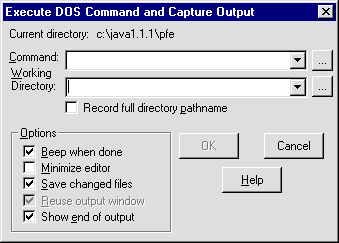

Preparing to Compile
Compilation can be started by pressing the Execute
button on the tool bar.

This will post the Execute Dos ...
dialog as follows.

Before attempting compilation the Working Directory
will have to be set either by typing C:>\JavaProgs in
the text window or by pressing the … button alongside it and
navigating with the file dialog posted from it.